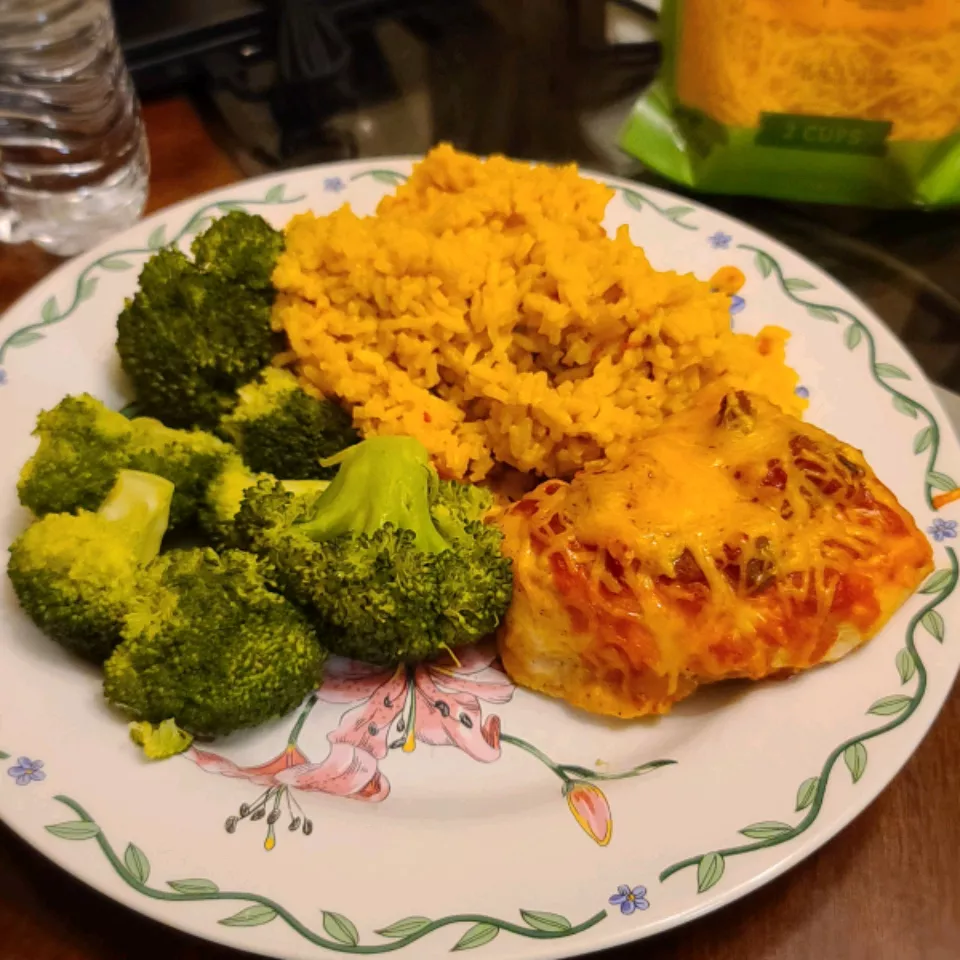

Salsa Chicken

Simple savoury baked chicken with taco seasoning and salsa.
Ingredients
- 4 skinless, boneless checken breast halves
- 4 teaspoons taco seasoning mix
- 1 cup salsa
- 1 cip shredded Cheddar cheese
- 2 tablespoons sour cream (Optional)
Steps
-
Preheat the oven to 375 degrees F (190 degrees C). Lightly grease a
9x13-inch baking dish.
-
Place chicken breasts in the prepared dish. Sprinkle seasoning mix on
both sides of chicken breasts; pour salsa on top.
-
Bake in the preheated oven until chicken is tender and juicy and the
juices run clear, 25 to 35 minutes.
-
Sprinkle chicken evenly with cheese. Continue baking until cheese is
melted and bubbly, 3 to 5 minutes more. Top with sour cream and serve.